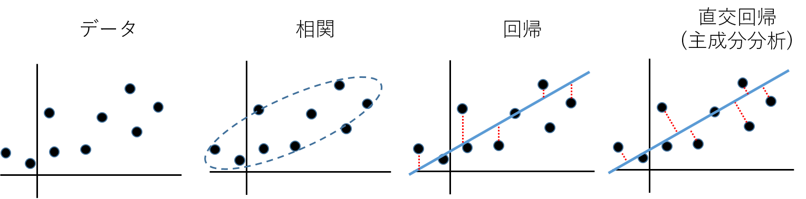
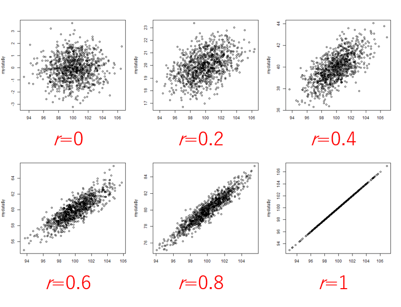

生物統計演習 第6回 相関と回帰
二次元のデータ
\(2\)個の変数、例えば\(x\)と\(y\)を\(n\)組観測して得られた場合、これを2次元データという。単純に\(x\)と\(y\)が独立か、関係があるかを調べる場合を 相関 という。一方、\(x\)に依存して\(y\)が変化する(あるいは\(y\)に依存して\(x\)が変化する)と考えて\(x\)と\(y\)の関連を調査する場合を回帰という。回帰は観測値\(y\)から回帰直線までの距離を最小化するように、回帰直線を推測する。距離を最小化する方法としては回帰直線に垂線をおろしてその距離を最小化する方法も考えられる。それは直交回帰 (主成分分析)とよび、本授業では扱わない。
|  |
|---|
| 二次元データの散布図と関連を解析する手法の考え方の違い |
| 二次元データの散布図と関連を解析する手法の考え方の違い |
相関
表はマグロ漁船員の頭髪中の総水銀量と経験年数との関係を示している。
マグロ 漁船員の頭髪中の総水銀量と経験年数との関係(滝沢1972一部改変)
| 経験年数 | 9 | 9 | 10 | 13 | 15 | 18 | 19 | 20 | 25 |
|---|---|---|---|---|---|---|---|---|---|
| 総水銀量 | 43.7 | 41.4 | 49.4 | 51.8 | 54.2 | 55.2 | 45.7 | 49.5 | 60.1 |
scatter()関数により、横軸(x軸)と縦軸(y軸)からなる平面に点が打たれた図であり、二つのデータの関連が一目で確認できる。データの系列は列方向に並んでおり、列名で識別できるデータが望ましい。
url="https://raw.githubusercontent.com/qikushu/stat/master/mercury_cor.txt"
d = readtable(url); % 読み込み
d
% plot
scatter(d.year, d.mercury)
title('散布図');
xlabel('経験年数');
ylabel('総水銀量');| 散布図の一例 |
ピアソンの相関係数 (パラメトリック解析)
計量データの相関を測定する統計量として、 ピアソンの相関係数 が知られ、しばしば\(r\)と表記する。ピアソンの相関係数\(r\)は、母集団が正規分布に従うことを仮定する。このような解析をパラメトリック分析という。
\(x=\{x_1, x_2, x_3, \cdots, x_n\}\)、\(y=\{y_1, y_2, y_3, \cdots, y_n\}\)の相関係数\(r\)は\(x\)と\(y\)の共分散\(s_{xy}^2= \frac{\sum^{n}_{i=1} (x_i - \bar{x}) (y_i - \bar{y})}{n-1}\)、 \(x\)の標準偏差\(s_x = \sqrt{ \frac {\sum^{n}_{i=1} (x_i - \bar{x})^2}{n-1}}\)、\(y\)の標準偏差\(s_{y}= \sqrt{ \frac {\sum^{n}_{i=1} (y_i - \bar{y})^2}{n-1}}\)としたとき、 \[ r = \frac{s_{xy}^2}{s_x \cdot s_y} \\ \] と計算する。\(-1 \leq r \leq 1\)の範囲をとり、\(r\)が正の値をとるときは\(x\)が増えるほど\(y\)が増える傾向があり、\(r\)が負の値をとるときは\(x\)が増えるほど\(y\)が減少する傾向がある(図)。絶対値が大きいほどその傾向が顕著である。
year = d.year;
mercury = d.mercury;
% 共分散
s2xy = cov(year, mercury);
% s2xyは分散共分散行列といい、対角成分は自身の分散で、非対角成分が共分散である。
% 結果
2xy =
32.9444 23.9722
23.9722 35.3211
と標準偏差から求める
cov(year, mercury) / ( std(year) * std(mercury) )|  |
|---|
| \(r\)が正の時の散布図 |
 |
|---|
| \(r\)が負の時の散布図 |
相関係数の意味
いま\(n\)組の2次元データについて考えているが、見方を代えて\(n\)次元データが2つあると考えると、平面上に二つのベクトルが原点から伸びていると考えられる。\(x\)と\(y\)から平均値を引いて作成した偏差ベクトルを\(\vec{d_x}\)および\(\vec{d_y}\)とする (図)。
 |
|---|
| データをベクトルとして捉えるみかた |
ここで余弦定理より、 \[ \vec{d_x} \cdot \vec{d_y} = |\vec{d_x}| |\vec{d_y}| cos \theta \\ cos \theta = \frac{\vec{d_x}}{|\vec{d_x}|} \cdot \frac{\vec{d_y}}{|\vec{d_y}|} = r \] ただし、\(|\vec{d_x}|\)および\(|\vec{d_y}|\)は\(\vec{d_x}\)と\(\vec{d_y}\)のベクトルの長さであり、なす角を\(\theta\)とする。\(\vec{d_x}/|\vec{d_x}|\)および\(\vec{d_y}/|\vec{d_y}|\)は標準化により長さが1のベクトルである。
右辺は相関係数\(r\)と等しいことが知られている(補足資料1)。相関係数は片方のベクトルからもう片方のベクトルに垂線を下した時のその余弦の長さである。ベクトルの長さを1に揃えてベクトルがどれくらい同じ方向を向いているのかを調べている。完全に同じなら+1、完全に逆方向なら-1、直交していれば無関係で0となる。
それではmatlabにて計算して見よう
year = d.year;
mercury = d.mercury;
dy = year - mean(year) % 平均値からの偏差ベクトルを作成
dm = mercury - mean(mercury) % 平均値からの偏差ベクトルを作成
length_dy = sqrt(sum(dy.^2)) % 各要素の二乗和の平方根がベクトルの長さ
length_dm = sqrt(sum(dm.^2)) % 各要素の二乗和の平方根がベクトルの長さ
% 内積
dot((dy / length_dy ) ,(dm / length_dm ))
% ans =
% 0.7027
%標準関数
corr(year, mercury)無相関の検定
相関係数に関して有意性の検定を行うことができる。帰無仮説(\(H_0\))は両者に相関はない、すなわち母相関係数\(\rho=0\)(\(\rho\), ローと読む)とする。観察より得られたピアソンの相関係数\(r\)について、
\[ t = \frac{r \sqrt{n-2}}{\sqrt{1-r^2}} \] は自由度\(n-2\)の\(t\)分布に従うことが知られている。ただし、\(n\)はデータ対の数である。式から\(r\)と\(t\)の正負が一致することがわかる。\(p\)は\(t\)分布において、\(>|t|\)を満たす両側のすそ野を足し合わせて得る。有意水準\(\alpha=0.05\)に設定し、通常の\(t\)検定と同様に有意性を判定する。上記の例について検定をしてみよう。
r = 0.6974281
n=9
t = r * sqrt(n - 2)/sqrt(1-r^2)
% 結果の表示
% 自由度n-2における5%棄却域を求める
tCriticalValue = tinv(1 - p, n - 2);
% 2.3646
% 得られたtは有意水準5%における両側確率の棄却域 -2.364624 < t < 2.364624に
% 含まれていない。そのため、帰無仮説を棄却し、対立仮説を採用する。
% 相関係数は0とは言えない。
% 直接p値を求める。
% 帰無仮説(rho = 0)のもと、t値が得られる確率を求める (両側なので二倍する)
(1 - tcdf(t, n - 2))*2
% 0.0367514有意水準5%より小さいため、帰無仮説を棄却する。母相関係数は0とは言えない。
matlabデフォルトの関数を用いた方法
corrcoef関数はcorrよりパワフルで、行列を処理可能である。任意の2列の総当たりで相関係数が計算される。得られる行列を
相関行列 という。
[r, p] = corrcoef(year, mercury); % rは相関係数、pはp値
r
p三群以上のデータに関する相関行列
これまで2群のデータについて紹介した。データが3群以上ある多変量の場合についても 二つを一対とする相関関係を調べていく。総当たりで相関関係を調べ、相関係数を表の形のしたものを 相関係数行列 という。下記のデータは、世界各国における男女の寿命、喫煙、アルコール摂取、GDPをに関するデータである。データは統計教育推進委員会教育教材サイトより引用した(http://www.jfssa.jp/statedu/)。
まずは散布図を眺め、相関係数を計算しよう。
% データ読み込み
url3="https://raw.githubusercontent.com/qikushu/stat/master/lifetime.txt"
T3 = readtable(url3)
head(T3) % 読み込みの確認
ary3 = table2array(T3);
% 散布図行列の作成
[~,ax] = plotmatrix(ary3);
% ラベルを付けるのは難しいようです。とにかく以下を実行してください
% 変数の数を取得
numVars = size(ary3, 2);
% 各サブプロットのx軸とy軸にラベルを設定
for i = 1:numVars
% y軸ラベル（左端の列）
ylabel(ax(i, 1), T3.Properties.VariableNames{i});
% x軸ラベル（最下行の列）
xlabel(ax(numVars, i), T3.Properties.VariableNames{i});
end| 総当たりの散布図 |
総当たりの相関係数を計算する。
corrcoef(ary3) % 相関係数行列
% 以下は結果。
ans =
1.0000 0.9707 0.5158 0.6151 0.1074 0.6942
0.9707 1.0000 0.4617 0.5960 0.1051 0.7111
0.5158 0.4617 1.0000 0.7337 0.0814 0.6762
0.6151 0.5960 0.7337 1.0000 0.1492 0.6706
0.1074 0.1051 0.0814 0.1492 1.0000 -0.0345
0.6942 0.7111 0.6762 0.6706 -0.0345 1.0000列名と行名がわからないので多少わかりにくい。テーブル型にしておこう。
r = corrcoef(ary3); % 相関係数行列をrに代入
tr3 = array2table(r); % r(配列型)をtr3 (テーブル型)に変換
% T3テーブルの変数名を、tr3テーブルの列名(VariableNames)にコピー
tr3.Properties.VariableNames = T3.Properties.VariableNames;
% T3テーブルの変数名を、tr3テーブルの行名(RowNames)にコピー
tr3.Properties.RowNames = T3.Properties.VariableNames;
tr3結果
tr3 =
lifeFemale lifeMale alcohol smokeFemale smokeMale GDP
__________ ________ ________ ___________ _________ _________
lifeFemale 1 0.97073 0.51576 0.61511 0.10737 0.69419
lifeMale 0.97073 1 0.4617 0.59598 0.10511 0.71111
alcohol 0.51576 0.4617 1 0.73369 0.081434 0.67616
smokeFemale 0.61511 0.59598 0.73369 1 0.14917 0.67058
smokeMale 0.10737 0.10511 0.081434 0.14917 1 -0.034526
GDP 0.69419 0.71111 0.67616 0.67058 -0.034526 1散布図を見ると男女の寿命には相関関係がある(図)のはなんとなくうなづけるが男女の寿命は喫煙量と正の相関を持つ。これは喫煙するほど寿命が延びる傾向があることを意味する。また、男女の寿命はアルコール摂取量とも正の相関がある。お酒を飲むほど長寿というが、ここまで顕著に出るだろうか。
| 総当たりの散布図 (再掲) |
疑似相関
実は、GDPが大きいと所得が大きいため、アルコールなどの嗜好品を楽しむ傾向がある(正の相関がある)と同時に、GDPが大きいと医療や栄養状態が良好なため、寿命が延びる傾向がある。結果、寿命とアルコール、寿命と喫煙について、見かけの相関が見られたと考えられる(図)。このように、第三の変数が介在することによって疑似相関が発生することに注意しなくてはならない。
| 見かけの相関 |
ネットワークグラフ
二者間の関係性を示す任意の尺度に基づいてネットワークグラフを作成する関数drawNetworkGraphTを作りました。https://github.com/qikushu/stat/blob/master/matlab/drawNetworkGraphT.m
からダウンロードして、MATLABにドラッグしてインストールしてください。以下のように実行してください
drawNetworkGraphT(tr3,3);
drawNetworkGraphT(tr3,10); % 好みによって線の太さを太くする。正の値を赤、負の値を青で示します。各項目間の擬似相関を確認してください
偏相関係数
偏相関係数を計算すると、着目している二者以外の因子を統計的に除去した後に、相関係数を計算することができる。partialcorr関数は
Statistics and Machine Learning Toolbox に含まれている。
[pr, p] = partialcorr(ary3)
pr
pr =
1.0000 0.9452 0.3152 0.0087 -0.0329 -0.1967
0.9452 1.0000 -0.3568 0.0773 0.0789 0.3646
0.3152 -0.3568 1.0000 0.4925 0.0623 0.4368
0.0087 0.0773 0.4925 1.0000 0.1410 0.1496
-0.0329 0.0789 0.0623 0.1410 1.0000 -0.2320
-0.1967 0.3646 0.4368 0.1496 -0.2320 1.0000ネットワークグラフの描画
drawNetworkGraphT(pr,10); 偏相関係数を見ると、男性の寿命とアルコールには負の相関があり、常識にあう(図)。寿命と喫煙についてはほぼ無相関である。アルコールと男性の喫煙は相関がほとんどないが、アルコールと女性の喫煙は相関がある。おそらく男女で喫煙とアルコールの関連の仕方が異なるのだろう。
順位相関 (ノンパラメトリック解析)
順位に変換した表をにしめす。順位尺度に関する計量データの相関を測定する統計量として、スピアマンの順位相関 や ケンドールの順位相関 が知られる。ノンパラメトリック分析ではパラメトリック分析とは異なり、特定の確率分布に依存しないため、汎用性がたかい。一般的には検出力が低いといわれるが、パラメトリック分析にて仮定する前提の確率分布が現実と適合しない場合、無理やりパラメトリック分析を行うより、ノンパラメトリック分析のほうが妥当である場合がある。
| 経験年数順位 | 1 | 2 | 3 | 4 | 5 | 6 | 7 | 8 | 9 |
|---|---|---|---|---|---|---|---|---|---|
| 総水銀量順位 | 2 | 1 | 4 | 6 | 7 | 8 | 3 | 5 | 9 |
url2="https://raw.githubusercontent.com/qikushu/stat/master/mercury_rank.txt"
d2 = readtable(url2)
year_rank mercury_rank
1 1 2
2 2 1
3 3 4
4 4 6
5 5 7
6 6 8
7 7 3
8 8 5
9 9 9
% 散布図
scatter(d2.year_rank, d2.mercury_rank)
xlabel('Year_rank'); % X軸のラベルを設定
ylabel('Mercury_rank'); % Y軸のラベルを設定
title('順位尺度の散布図'); % グラフのタイトルを設定スピアマンの順位相関は、ピアソンの相関係数の計算をそのまま順位に対して適用したものである。変数間の単調な関係を測定し、データが正規分布に従わない場合や外れ値が存在する場合に有用である。
% スピアマンの順位相関 順位データに対してピアソンの相関係数を計算
corr(d2.year_rank, d2.mercury_rank)
% 生データから、スピアマンの順位相関係数の計算
[rho, p] = corr(d.year, d.mercury, 'Type', 'Spearman')
% rhoがスピアマンの順位相関係数である
% pは帰無仮説が無相関の時にrhoが得られる確率である。5%水準で検定する。ケンドールの順位相関は、\(n\)対のデータから任意の二対選択するのは\(_nC_2\)通り考えられる。対について比較したときの正負を見たときに、正正、負負なら同方向(順方向)の数としてカウント(G)し、、正負、負正なら逆方向の数としてカウント(H)する。\(G-H/(n(n-1)/2)\)を相関係数とする。
% ケンドールの順位相関
[tau, p] = corr(d.year, d.mercury, 'Type', 'Kendall')
% tauがケンドールの順位相関係数である。
% pは帰無仮説が無相関の時にtauが得られる確率である。5%水準で検定する。回帰
2変数\(x\)と\(y\)について、\(x\)の大きさが\(y\)の大きさを決定している関係があるとき、 \(x\)を 独立変数 、\(y\)を 従属変数 という。回帰の例として、父親とその息子の身長に関するデータについて紹介する。通常、生物の形質は、遺伝的な要因とそれ以外(環境要因という)に区別されうる。身長は遺伝子の影響が大きい形質だから親の身長と子供の身長には、遺伝的な関連が見えてきやすい。データは統計教育推進委員会教育教材サイトより引用した(http://www.jfssa.jp/statedu/)}。
親の身長が子供に遺伝するので、父親の身長が独立変数\(x=(x_1, x_2, \cdots, x_n)\)としたときに、息子の身長を従属変数\(y=(y_1, y_2, \cdots, y_n)\)とし、父親(\(x\))の身長にしたがって、息子(\(y\))の身長が増加する、あるいは減少すると考え、 \[ y=ax+b \] によって、二値の傾向が「要約」される、別の言い方では、xの値でyの予測値が得られる」と考える(図)。これを線形回帰といい、この直線を回帰直線という。\(a\)を 傾き(slope) 、\(b\)を 切片(intercept) という。\(y\)は\(\hat{y}=ax+b\)により予測されると考え、\(\hat{y}\)を予測値という。\(y\)が\(x\)の線形関数で回帰する場合を線形回帰、二次関数などのように線形関数でない関数にて回帰する場合を非線形回帰という。
 |
|---|
| 親子回帰 |
散布図の作成
二次元の散布図を作成する。
% データ読み込み
url4="https://raw.githubusercontent.com/qikushu/stat/master/height_reg.txt"
d4 = readtable(url4)
% 散布図の書き方1
scatter(d4.father, d4.son)最小二乗法
息子の身長の実測値\(y\)は、父親の身長を\(x\)としたとき、\(\hat{y}=ax+b\)により予測されるが、必ず誤差\(e=(e_1, e_2, \cdots, e_n)\)がある。すなわち、任意の\(i=1, 2, \cdots , n\)について、 \[ y_i = ax_i + b + e_i \] である。移項して \[ e_i = y_i - (ax_i + b) \] 両辺絶対値を取って \[ |e_i| = |y_i - (ax_i + b)| \] ここでi=1…nまでの総和を取って \[ \sum_{i=1}^n |e_i| = \sum_{i=1}^n |y_i - (ax_i + b)| \] を考える。左辺は誤差の絶対値の総和\(\sum_{i=1}^n|e_i|\)であり、これを最小にするときの\(ax+b\)を求めると、当てはまりがよさそうである。ここで、\(\sum_{i=1}^n|e_i|\)が最小の時、\(\sum_{i=1}^n(e_i)^2\)も最小であるため、数学的な性質の良さから、代わりに \[ \sum_{i=1}^n (e_i)^2 = \sum_{i=1}^n (y_i - (ax_i + b))^2 \] を最小化する\(a\)と\(b\)を求める。これを最小二乗法という。その解を\(\hat{a}\)(\(a\)ハット)と\(\hat{b}\)(\(b\)ハット)とすると、 \[ \hat{a} = \frac{ x\text{と}y\text{の共分散} } { x\text{の不偏分散} } = \frac{ s_{xy}^2 } { s_x^2 } \\ \hat{b} = \bar{y} - \hat{a} \bar{x} \] であることが証明されている。
fa = d4.father % 父親の身長を取り出す
son = d4.son % 息子の身長を取り出す
cov(fa,son) % 父親と息子の(不偏)共分散
var(fa) % 父親の不偏分散
a = cov(fa,son)/var(fa) % 回帰直線の傾き
mfa = mean(fa) % 父親の平均値
mson = mean(son) % 息子の平均値
b = mson - a * mfa分散分析と線形回帰は線形代数による表現では等価であり、線形モデルとして一般化されている。そのため、分散分析を行う際に用いたfitlm関数がここでも用いられる。
% 回帰分析 (線形モデル)
lm = fitlm(d4, 'son ~ father');
lm
% 結果の確認
Linear regression model:
son ~ 1 + father
Estimated Coefficients:
Estimate SE tStat pValue
________ ________ ______ __________
(Intercept) 120.1 13.16 9.1259 3.4317e-15
father 0.30663 0.076663 3.9997 0.00011412
Number of observations: 114, Error degrees of freedom: 112
Root Mean Squared Error: 4.98
R-squared: 0.125, Adjusted R-Squared: 0.117
F-statistic vs. constant model: 16, p-value = 0.000114
% 回帰直線を図に書き加える
hold on; % 現在の図にプロットを追加するため
% 回帰直線の計算
xFit = linspace(min(d4.father), max(d4.father), 100)'; % フィット用のx値
yFit = predict(lm, xFit);
% 回帰直線の描画
plot(xFit, yFit, 'r-'); % 赤い線でプロット
hold off; % 追加プロットの終了son ~ fatherはモデル式であり、fatherを独立変数、sonを従属変数として線形回帰を行うという意味である。Coefficientsは「係数」、Estimateは「推定値」を表す。(Intercept)が切片\(\hat{b}\)、fatherが傾き\(\hat{a}\)に相当する。つまり、回帰直線は\(y=0.30663x+120.1\)と推定された。
回帰分析がしていること。
回帰分析の結果について、検定を行うことができる。回帰直線(予測式)は、 \[ \hat{y} = \hat{a}x+\hat{b}\] とあらわされるが、最小二乗法の公式、\(\hat{b} = \bar{y} - \hat{a} \bar{x}\)を代入すると、 \[ \hat{y} = \hat{a}x+\bar{y} - \hat{a} \bar{x}\] である。\(x = \bar{x}\)のとき、 \[ \hat{y} = \bar{y} \] である。これは回帰直線は任意の\(a\)、\(b\)に関わらず、点\((\bar{x}, \bar{y})\)を必ず通ることを示している。回帰分析とは点\((\bar{x}, \bar{y})\)の周りに回帰直線をくるくる回転させて、最適な\(a\)と\(b\)を探し、得られたのが\(\hat{a}\)と\(\hat{b}\)というわけだ。
回帰係数の検定
\(\hat{a}\)あるいは\(\hat{b}\)を推定値の標準誤差SEにて割った値はなんと\(t\)分布に従うことがわかっている。なのでt値tstatで有意性を検定する。\(\hat{a}\)と\(\hat{b}\)の\(t\)値をそれぞれ\(t_a\)および\(t_b\)とおくと \[
t_b = \frac{ \hat{b} } {SE} = \frac{ 120.09784 } {13.16008} =
9.1259 \text{(自由度はn-2)}\\
t_a = \frac{ \hat{a} } {SE} = \frac{ 0.30663 } {0.07666} = 3.9999
\text{(自由度はn-2)}
\] である。帰無仮説(\(H_0\))は「推定値は0」として有意性を判定する。
0.1%、1%、5%水準にて有意の場合、***、**、*が付される。fatherの項には***が付いており、0.1%水準で有意であり、sonの身長はfatherの身長により説明される、といってよい。多くの場合切片は有意(0でない)ので、傾きの有意性が重要である。
決定係数
R-squaredは寄与率あるいは決定係数\(R^2\)といい、 \[
R^2 = 1 - \frac { \sum{(y_i - \hat{y})^2}}{\sum{(y_i - \bar{y})^2}}
\] である。\(\sum{(y_i - \hat{y})^2} /
\sum{(y_i -
\bar{y})^2}\)のうち、分子について考えよう。観察値と予測値の誤差\(y_i -
\hat{y}\)が少ないほうが当てはまりが良いといえる。対立仮説(\(H_1\))「\(a \neq
0\)」が真のときの各\(y_i\)と予測値\(\hat{y}\)の誤差平方和(\(SS_{H_1}\))を考えると \[
SS_{H_1} = \sum{(y_i - \hat{y})^2}
\] である。次は分母。回帰分析における帰無仮説(\(H_0\))「\(a=0\)」が真のとき、前述のとおり、最小二乗法の公式\(\hat{b} = \bar{y} - \hat{a}
\bar{x}\)に\(\hat{a}=0\)を代入すると、 \[
\hat{b} = \bar{y} = \hat{y}
\] である。回帰直線\(\hat{y} = \hat{a}x
+ \hat{b}\)に、帰無仮説の\(\hat{a}=0\)および上記より\(\hat{b} = \hat{y}\)を代入すると \[
\hat{y} = \bar{y}
\] である。以上より、帰無仮説(\(H_0\))\(における各\)y_i\(と予測値\)\(の誤差平方和(\)SS_{H_0}$)は \[
SS_{H_0} = \sum{(y_i - \bar{y})^2}
\] である。なので
\[
R^2 = 1 - \frac { SS_{H_1}}{SS_{H_0}}
\]
と大きく捉えよう。観測値がほぼ回帰直線上に乗っている場合、分子はほぼ0になり、決定係数は1に近づく。逆に観測値が回帰直線とは無関係のとき、分子は分母とほぼ等しくなるので、決定係数は0になる。決定係数は相関係数と関連が深く、単回帰分析の場合は\(r^2\)の平方根は相関係数\(r\)と等しいAdjusted R-squaredは調整済み寄与率あるいは調整済み決定係数という。
% 確かめ
corr(fa, son) % ピアソンの相関係数 (r)
0.3535
corr(fa, son)^2 % ピアソンの相関係数の二乗 (r^2)
0.1250
% 決定係数R-squaredと等しい第六回演習のレポート課題
- 散布図の作成 ある植物の移植後の経過週数と草丈の関係を調査し、次表のような結果を得た
| Week | Height |
|---|---|
| 8.5 | 86.9 |
| 5.8 | 65.5 |
| 7.0 | 68.5 |
| 9.5 | 96.4 |
| 8.7 | 83.1 |
| 3.0 | 17.7 |
| 6.9 | 72.3 |
| 4.7 | 51.3 |
| 4.8 | 44.2 |
| 5.8 | 69.6 |
| 5.3 | 45.6 |
| 7.9 | 79.3 |
| 6.5 | 64.3 |
| 5.2 | 60.1 |
| 5.9 | 66.2 |
以上のデータについて、二次元の散布図を作成せよ。
- ピアソンの相関係数 問題1のデータについてピアソンの相関係数を求めよ。
- 無相関検定 問題2にて得られた相関係数の有意性について\(t\)検定にて検定せよ。
- ノンパラメトリック相関解析への準備 問題1の表を順位尺度に変換して示せ。
- スピアマンの相関解析 問題4の順位表から、スピアマンの順位相関係数を求めよ。
- ケンドールの相関解析 問題4の順位表から、ケンドールの順位相関係数を求めよ。
- 回帰分析 問題1の表から、回帰直線を求めよ。
- 回帰分析 求めた回帰直線から、8, 9, 10週目における草丈を予測せよ。
url="https://raw.githubusercontent.com/qikushu/stat/master/kadai7-2.txt"
d = readtable(url)